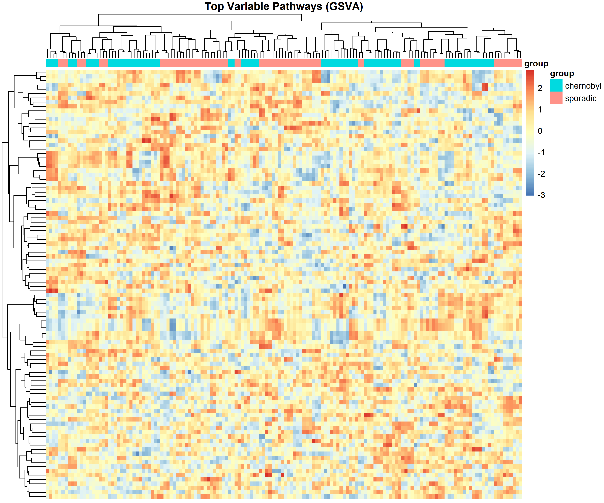
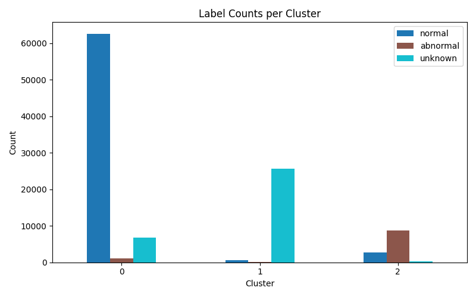
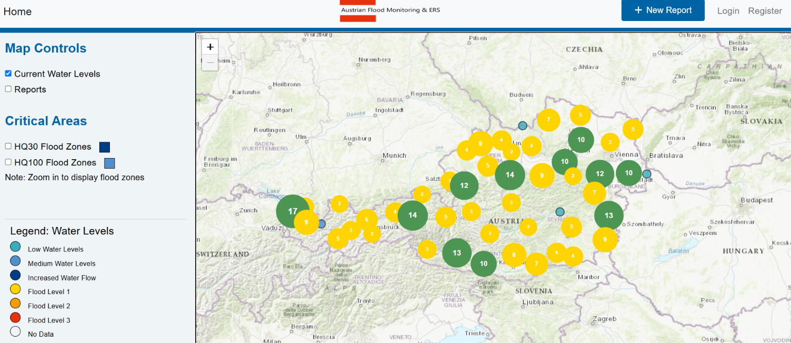

B.Sc. Informatics Graduate Freelancer Confectioner
More About Me
Hi, I'm Lisa.
From growing up on an organic farm to working as a confectioner and traveling solo, I've always enjoyed learning by doing. Today, as an informatics graduate, I'm interested in understanding systems, solving problems, and building things that make life a little easier.
I graduated in 2026 with a B.Sc. in Informatics, specialising in Data Science, at IMC University of Applied Sciences Krems. My path to tech wasn't a straight line: I trained as a confectioner, worked in agriculture and an office, and spent 1.5 years travelling through Europe and the Americas. It taught me to work independently and adapt quickly, and I bring that mindset to data analysis, software development and AI-related work.
My project experience spans data science, bioinformatics, web development, databases, and UX research.
10/2022 - Present (project-based)
Small jobs in diverse fields, including search results correction, scripted speech recording and survey projects.
08/2026 - 09/2026
Coordinated digitalization projects, improved FINMATICS AI accuracy through error analysis and training, and supported AI adoption for meeting notes.
09/2025 - 02/2026
Ran UX tests on the new website while it was in development and fed the findings back to the team, leading to concrete change, e.g. a simpler navigation or bug fixes. Researched and collected ideas for further website sections based on competitor analysis and user needs.
03/2025 - 06/2025
Diverse tasks related to publishing Jobs, customers and content management.
09/2020 - 09/2023 (inconsistently)
Diverse work from animal care, to food and beverages production, to kitchenwork and service at the restaurant and basic household chores.
03/2021 - 05/2021
Assistance with funding applications, transferring data, digitization and reception services.
09/2016 - 09/2020
Employed in all fields of baking Austrian sweets, ice-cream production, decorating cakes and manufacturing pralines.
Including two years of apprenticeship.
09/2023 - 06/2026
Informatics
(Computer Science focused on Data Science)
09/2017 - 02/2021
A-Level - general qualification for university entrance
With a focus on health and social affairs
09/2016 - 11/2018
Confectioner
09/2013 - 06/2016
Graduating as skilled worker for agriculture- and household-management
A collection of university projects and personal work involving
machine learning, bioinformatics, web development, databases, and UX research.

Bioinformatics Project
Analyzed gene expression data from tumor samples and applied clustering methods to identify patterns in biological data.
Techniques/Technologies:
R · Bioinformatics · Data Analysis · GSVA · Clustering

Big Data Project
Developed neural network classification models and applied clustering techniques to analyze ECG data and evaluate model performance.
Techniques/Technologies:
Python · Wavelet Transform · Feature Engineering · Neural Networks · k-means

Scrum Web Development Project
Developed a Django-based web application for flood information management with historical and real-time information features.
Techniques/Technologies:
Python · Django · Web Development · Scrum
Database Project
Designed and implemented database structures for a train ticket system using relational and graph-based databases.
Techniques/Technologies:
MariaDB · Neo4j · Database Schema Design
Bachelor Thesis
Investigated differences between traditional usability testing and AI-simulated usability testing in a real-world scenario.
Techniques/Technologies:
UX Research · OpenAI's ChatGPT Agent model · Usability Testing
Hobby Automation Project
Developed a lightweight Python application to merge multiple PDF files per folder into single documents. Helped me prepare for exams and organize study materials.
Techniques/Technologies:
Python · PyPDF2 · File Handling
I'm currently looking for a position in development or data science where I can apply my skills, continue learning, and contribute to meaningful projects. I'm open to freelance work as well as part-time contract engagements. If you're looking for a curious and motivated team member, I'd be happy to connect.